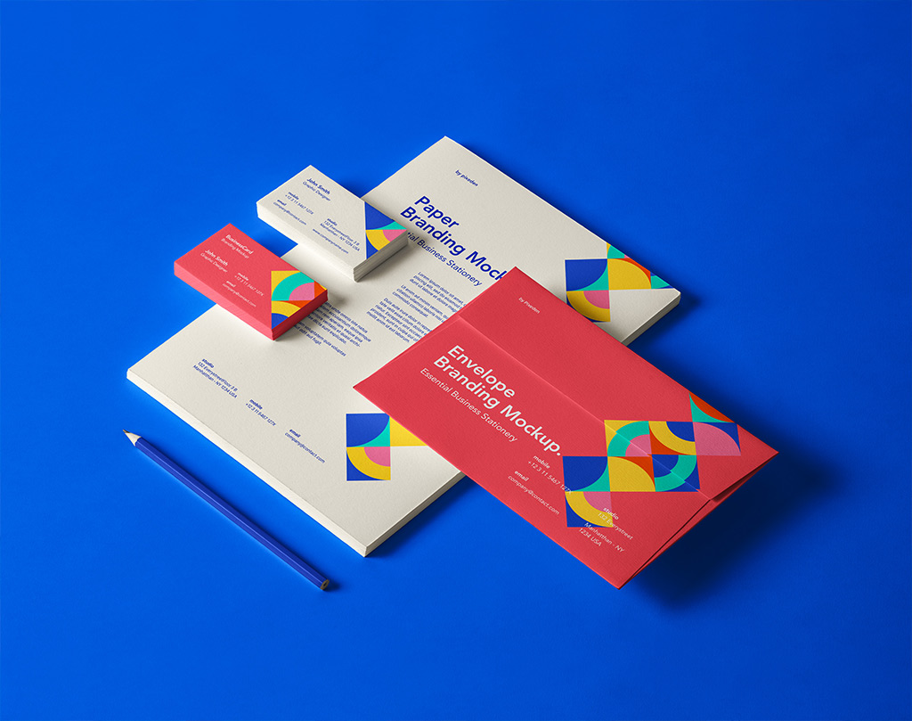

flex
※ flex 기본값 flex-direction:row; (가로방향) flex-wrap:nowrap; (가로 한줄) align-content:flex-start; (상단정렬 - 세로 2줄 이상일때) justify-content:flex-start; (좌측 정렬) align-items:stretch; (아이템 세로크기 동일) ex) display:flex; justify-content: space-between;


- 
ex) display:flex; flex-wrap: wrap; justify-content: space-between;


ex) 2줄(가로,세로 정렬) display: flex; flex-wrap: wrap; justify-content: space-between; align-content: space-between; height:400px;
- 01
- 02
- 03
- 04
- 05
- 06
- 07
- 08
- 09
display: flex; justify-content: center; align-items: center;
- 아이템을 중앙 정렬하는 방법